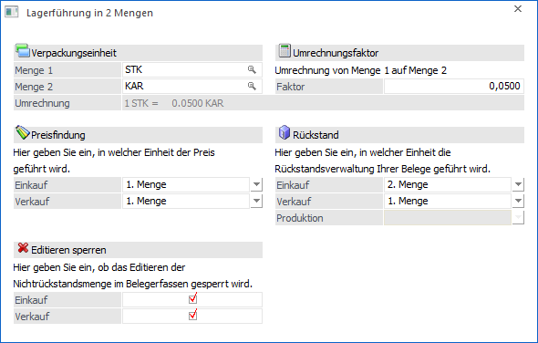
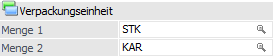
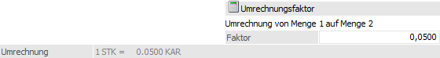
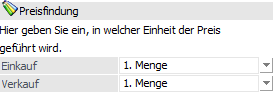
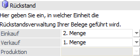
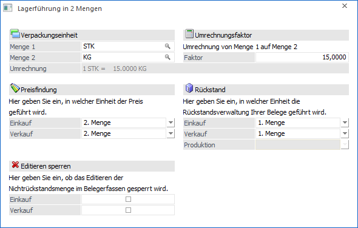
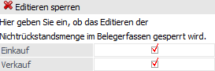

Durch die Anwahl des Buttons "Menge 2" im Programm "Artikel" (Register "Preise") kann die Definition der beiden Mengen erfolgen.
Hinweis
Die Definition der beiden Mengen kann nur erfolgen, solange der Artikel noch nicht bebucht worden ist.

Folgende Felder stehen zur Definition der 2 Mengen zur Verfügung:
Verpackungseinheit

Ø Menge 1 / Menge 2
An dieser Stelle erfolgt die Definition der Verpackungseinheiten für Menge 1 und Menge 2. Wenn auf bestehende Collis zurückgegriffen wird, so ist darauf zu achten, dass der Stück- und Preisfaktor des verwendeten Collis "1" beträgt, da bei der Lagerführung in 2 Mengen die Colli-Automatik ausgeschaltet ist. Neben dem Zugriff auf den Colli-Stamm können auch nicht angelegte Collis als Verpackungseinheit angegeben werden (in Form eines nicht numerischen Freitextes).
Hinweis
Sollten die Artikelstammdatenfelder "Colli Einkauf" und "Colli Verkauf" (Register "Preise" - Unterregister "Preise") bereits mit Daten versehen sein, so werden die Felder "Menge 1" und "Menge 2" automatisch befüllt. Bei der Speicherung der "Menge 2"-Definition erfolgt wiederum eine Aktualisierung in den Artikelstamm.
Umrechnungsfaktor

Ø Faktor
Hier wird der Umrechnungsfaktor von Menge1 auf Menge2 definiert. Anhand des Umrechnungsfaktors wird in allen Erfassungsprogrammen (z.B. Belegerfassung) die Menge der nicht führenden Menge (siehe "Rückstand") berechnet.
Beispiel 1
Grundsätzlich gibt es den Artikel in "Stück" und "Karton". Innerhalb eines Karton befinden sich 20 Stück. Dieses kann über die folgenden Einstellungen realisiert werden:
ü Menge 1 = "Stück" / Menge 2 = "Karton" / Faktor = 0,0500
ü Menge 1 = "Karton" / Menge 2 = "Stück" / Faktor = 20,0000
Beispiel 2
Die Mengeneinheiten (Verpackungseinheiten) lauten für den Verkauf "Stück" und für den Einkauf in "Kilo" (bei einem Faktor von 1 Stück = 5 Kilo). Bei der Erfassung eines Verkaufsbelegs wird die Menge der nicht führenden Einheit (Verkauf = Kilo) aufgrund des Faktors berechnet. D.h. bei einem Verkauf von 6 Stück lautet die Menge in Kilo 30.
Ø Umrechnung
In der Zeile Umrechnung wird die Umrechnung dargestellt.
Preisfindung

Ø Einkauf / Verkauf
An dieser Stelle wird definiert, ob sich der Preis des Artikels auf Menge 1 oder Menge 2 bezieht, wobei eine Unterscheidung zwischen Ein- und Verkauf getroffen werden kann.
Beispiel
Mengeneinheit für Verkauf in "Stück" und für Einkauf in "Kilo" (bei einem Faktor von 1 Stück = 5 Kilo). Die Preisfindung bezieht sich jeweils auf "Kilo", d.h. die Preise im Artikelstamm gelten jeweils pro Kilo (10,- €).
Bei einer Erfassung von 6 Stück wird zunächst die Menge der nicht führenden Einheit (Verkauf -> Kilo) aufgrund des Faktors berechnet (30 Kilo) und für den Gesamtpreis die Menge pro Kilo mit dem Einzelpreis multipliziert (d.h. 30 x 10,- € = 300,- €).
Rückstand

Ø Einkauf / Verkauf / Produktion
An dieser Stelle wird definiert, in welcher Einheit (Menge 1 oder Menge 2) das Lager geführt werden soll. Die Definition kann für Einkauf, Verkauf, sowie Produktion (nur bei Produktionsartikeln) erfolgen, wobei die Auswahl im Feld "Produktion" in der Regel gleich wie jener des Verkaufs ist!
Hinweis 1
Die Lager Mindest- und Sollmenge für den Einkauf müssen in der Rückstandseinheit des Einkaufs eingegeben werden.
Hinweis 2
Anhand eines Eintrages in der "Mesonic.ini" kann für einen Produktionsartikel eine unterschiedliche Rückstandsmenge für die Produktion (im Gegensatz zu der des Verkaufs) interlegt werden.
[Produktion]
EigenerProdRueckstand=1
Ist diese Option vorhanden, kann bei der Auswahl in welcher Rückstandsmenge die Produktion geführt werden soll ein anderer Wert gewählt werden, als beim Eingabefeld für den Verkauf. In diesem Fall ist die "führende" Menge in der Produktion dann die im Feld "Produktion" eingestellte Menge.
Beispiel 1 - Schweinehälften
Für Schweinehälften erfolgt der Ein- und Verkauf in Stück, wobei zusätzlich wird die Menge in Kilogramm verwaltet wird (1 Stück entspricht 15 Kilogramm). Die Preise werden im Artikelstamm nur in Kilo geführt.
ü Menge 1: Stück (STK)
ü Menge 2: Kilogramm (KG)
ü Preisfindung im Einkauf: Menge 2
ü Preisfindung im Verkauf: Menge 2
ü Rückstandsverwaltung im Einkauf: Menge 1
ü Rückstandsverwaltung im Verkauf: Menge 1

Beispiel 2 - Aluschienen
Der Einkauf von Aluschienen erfolgt in Kilogramm (1 Kilogramm entspricht 4 Meter), der Verkauf aber in Meter. Die Einkaufspreise werden dementsprechend in Kilo und die Verkaufspreise in Meter geführt.
ü Menge 1: Kilogramm (KG)
ü Menge 2: Meter (M)
ü Preisfindung im Einkauf: Menge 1
ü Preisfindung im Verkauf: Menge 2
ü Rückstandsverwaltung im Einkauf Menge 1
ü Rückstandsverwaltung im Verkauf Menge 2
Editieren sperren

Ø Einkauf / Verkauf
Die Optionen können getrennt nach Ein- bzw. Verkauf aktiviert werden. Ist eine dieser Checkboxen aktiviert, so kann die "Nicht"-Rückstandsmenge, die auf Basis des Umrechnungsfaktors vorgeschlagen wird, in den Stufen "Lieferschein / L.Lieferschein" und "Faktura / L.Faktura" nicht mehr editiert werden. Damit ist es möglich, ein Editieren der zweiten Menge im Belegerfassen artikelspezifisch zu erlauben oder zu verhindern.
Buttons
Ø Ok
Durch Anwahl des Buttons "Ok" bzw. der Taste F5 werden die Eingaben gespeichert.
Ø Ende
Bei Anwahl des Buttons "Ende" bzw. der Taste ESC wird das Fenster geschlossen und alle nicht gespeicherten Eingaben verworfen.